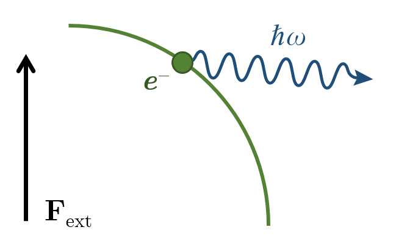

Глава 1. Общие свойства движения заряженных частиц в экстремально сильных электромагнитных полях
Итак, первая глава Общие свойства движения заряженных частиц в экстремально сильных электромагнитных полях.
Формулировка проблемы

$$\frac{\mathrm{d}\mathbf{p}}{\mathrm{d} t} = \mathbf{-E-v\times B}-\underline{\mathbf{F}_{rr}}$$
Эффект реакции излучения в классической ЭД известен уже более века, однако приводит к внутренним противоречиям теории. КЭД описывает реакцию излучения самосогласованно, однако корректность такого описания в нелинейном режиме до сих пор не подтверждена экспериментально. При этом эффекты, вызванные реакцией излучения в этом режиме при лазерно-плазменном взаимодействии многочисленны и включают, например:
Изменение механизмов ускорения частиц [Gelfer E. G. et. al. New J. Phys. 23 , 095002 (2021)]
Поглощение лазерного излучения [Grismayer T. et. al. Phys. Plasmas 23 , 056706 (2016)]
Обратный эффект Фарадея [Liseykina T. V. et. al. New J. Phys. 18 , 072001 (2016)]
Радиационный захват частиц [Gonoskov A. et. al. Phys. Rev. Lett. 113 , 014801 (2014)]
и др.
Уже более века в электродинамике известен эффект отдачи, которую испытывает электрон при излучении. В классической электродинамике этот эффект приводит к внутренним противоречиям теории на малых масштабах. В квантовой электродинамике эффект отдачи описывается самосогласованно, и в линейном режиме результаты квантовых вычислений ожидаемо совпадают с классическими. Однако, корректность квантового подхода в нелинейном режиме пока не подтверждена экспериментально. При этом на данный момент опубликовано уже большое число теоретических работ, в которых описываются различные явления, вызванные реакцией излучения, например, при лазерно-плазменном взаимодействии. Их экспериментальное измерение можно потенциально использовать для подтверждения предсказаний КЭД. Эти эффекты крайне разнообразны и включают, например, изменения механизмов ускорения частиц, поглощение лазерного излучения, обратный эффект Фарадея, радиационный захват частиц и многие другие.
Динамика заряженных частиц в режиме экстремальных радиационных потерь
Уравнения движения ультрарелятивистской заряженной частицы (электрона) в ЭМ поле с учётом реакции излучения
$$\frac{\mathrm{d}\mathbf{v}}{\mathrm{d}t} = -\frac{\mathbf{E}+\mathbf{v} \times \mathbf{B} - \mathbf{v} (\mathbf{v} \mathbf{E})}{\gamma}\equiv - \frac{\mathbf{F}_\perp}{\gamma}$$
$$\frac{\mathrm{d}\gamma}{\mathrm{d}t} = \mathbf{vE} - \mathbf{F}_\mathrm{rr}\left( |\mathbf{F}_\perp| \right)$$
При отсутствии реакции излучения можно оценить $\gamma \sim E$.
Режим, когда из-за радиационного трения выполняется условие $\gamma \ll E$, –– режим
экстремальных радиационных потерь В этом режиме динамика электрона приближённо описывается укороченными уравнениями
$$\frac{\mathrm{d}\mathbf{r}}{\mathrm{d} t} = \mathbf{v}_0$$
$$\mathbf{E}+\mathbf{v}_0 \times \mathbf{B} - \mathbf{v}_0 (\mathbf{v}_0 \mathbf{E})=0$$
A. S. Samsonov, E. N. Nerush, I. Yu. Kostyukov // Physical Review A. –– 2018. –– Т. 98, № 5. –– С. 053858.
Важной особенностью этих эффектов является то, что они становятся наиболее выраженными, когда реализуется так называемый режим экстремальных радиационных потерь. Простыми словами этот режим наступает тогда, когда из-за радиационных потерь электрон не способен набрать энергию, которую он бы набрал бы без учёта реакции излучения. В первой части работы показывается, что в таком режиме динамику электрона можно приближённо описывать укороченными уравнениями, которые приведены здесь внизу слайда, в которых не ускорение, а скорость частицы определяется локальными ЭМ полями. Более того, в данных уравнениях явно не присутствуют слагаемые, отвечающие за реакцию излучения. Фактически такое упрощение происходит как и во многих других динамических системах с диссипацией, а данные уравнения описывают некую асимптотическую траекторию, вдоль которой электрон двигался бы без трения.
Поправки к безрадиационному описанию динамики частиц
Для более точного описания можно разложить уравнения движения около решения $\mathbf{v}_0$, т.е.
$$\mathbf{v}=\left( 1 - \frac{\delta^2}{2} \right) \mathbf{v}_0 + \mathbf{v}_1,\ \delta^2 = v_1^2 + \gamma^{-2}$$
$$\frac{\mathrm{d}\mathbf{v}_1}{\mathrm{d}t} = \frac{\mathbf{F}_1}{\gamma} - \left( 1 - \frac{\delta^2}{2} \right)\frac{\mathrm{d}\mathbf{v}_0}{\mathrm{d}t} -\mathbf{v}_0\left(\mathbf{v}_1\frac{\mathrm{d}\mathbf{v}_0}{\mathrm{d}t} \right)$$
$$\frac{\mathrm{d}\gamma}{\mathrm{d}t} = -\mathbf{v}_0\mathbf{ E} \left( 1 - \frac{\delta^2}{2} \right) - \mathbf{v}_1 \mathbf{E} - F_\mathrm{rr}(\chi)$$
$$\mathbf{F}_1 = \mathbf{v}_1 \left( (\mathbf{v}_0 \mathbf{E}) + (\mathbf{v}_1 \mathbf{E})\frac{v_1^2 - \gamma^{-2} }{2v_1^2} \right) + [\mathbf{v}_0\times\mathbf{v}_1] \left( (\mathbf{v}_0 \mathbf{B}) + (\mathbf{v}_1 \mathbf{B}) \frac{\delta^2}{2v_1^2}\right) + \mathcal{O}(\delta^3)$$
$$\chi = \frac{\gamma \delta}{a_\mathrm{S}}\sqrt{\left[ \left( \mathbf{v}_0 \mathbf{E} \right)^2 + \left( \mathbf{v}_0\mathbf{E} \right)\left( \mathbf{v}_1\mathbf{E} \right) + \left( \mathbf{v}_0\mathbf{B} \right)\left( \mathbf{v}_1\mathbf{B} \right) \right] + \frac{\delta^2}{4v_1^2}\left[ \left( \mathbf{v}_1 \mathbf{E} \right)^2 + \left( \mathbf{v}_1 \mathbf{B} \right)^2 \right] + \mathcal{O}(\delta^3)}$$
A. S. Samsonov, E. N. Nerush, I. Yu. Kostyukov // Matter and Radiation at Extremes. –– 2022. –– Т. 8, № 1. –– С. 014402.
Для описания приближения реальных траекторий к этой асимптотике нами была построена по сути теория возмущений. Считая, что скорость электрона слабо отличается от асимптотического безрадиационного направления, можно записать следующие уравнения движения. На первый взгляд уравнения кажутся более громоздкими, чем изначальные уравнения, однако из-за наличия малого параметра, данные уравнения во многих конфигурациях могут быть явно решены, в отличие от неукороченных уравнений движения.
Динамика электрона в параллельных вращающихся электрическом и магнитном полях с учётом реакции излучения
\[\begin{align}
\begin{gathered}
\mathbf{v}_0 = \mathbf{E}/E \equiv -\mathbf{e} \\ \mathbf{\Omega}\times\mathbf{v}_1 = - \frac{E}{\gamma} \mathbf{v}_1 + \frac{B}{\gamma} \mathbf{e}\times\mathbf{v}_1 + \mathbf{\Omega}\times\mathbf{e} + v_1\mathbf{e}
\end{gathered} &&
\begin{gathered}
v_x = \frac{\gamma B}{E^2 + B^2} \\
v_\perp = \frac{\gamma E}{E^2 + B^2}
\end{gathered} &&
\begin{gathered}
E \cdot \left( 1 - \frac{\delta^2}{2} \right) = F_\mathrm{rr}\left( \frac{\gamma\delta E}{a_S} \right) \\
\delta = \sqrt{\frac{\gamma^2}{E^2 + B^2} + \frac{1}{\gamma^2}}
\end{gathered}
\end{align}\]
A. S. Samsonov, E. N. Nerush, I. Yu. Kostyukov // Matter and Radiation at Extremes. –– 2022. –– Т. 8, № 1. –– С. 014402.
Данный подход для решений уравнений движения с учётом реакции излучения был применён к различным конфигурациям. В частности, была рассмотрена конфигурация вращающихся параллельных электрического и магнитного полей. Это так называемая задача Зельдовича. С помощью нашего подхода можно найти стационарное решение, которое соответствует синхронному с полями вращению электрона. Здесь на слайде это решение приведено и также представлено его сравнение с численным решением неукороченных уравнений, где реакция излучения учитывается или классически, как непрерывная сила - это зелёная линия, или квантовым образом, когда излучения фотонов происходят стохастически - это тонкие голубые линии, и их среднее - синяя линия.
Динамика электрона в линейно-поляризованной монохроматической плоской волне с учётом реакции излучения
\[
\begin{align}
\begin{gathered}
p_y = \frac{p_{y,0}+a_0\sin\varphi\left(1 + \frac{\mathcal{A}\varphi}{2}\right) - \frac{2 \mathcal{A}a_0}{3} (2 + \cos\varphi)\sin^4\frac{\varphi}{2}}{1+\frac{\mathcal{A}}{2} \left( \varphi + \frac{\sin2\varphi}{2} \right)} \\
p_z = \frac{p_{z, 0}}{1+\frac{\mathcal{A}}{2} \left( \varphi + \frac{\sin2\varphi}{2} \right)}
\end{gathered}&&
\begin{gathered}
p_- = \gamma - p_x = \frac{p_{-, 0}}{1 + \frac{\mathcal{A}}{2} \left( \varphi + \frac{\sin2\varphi}{2} \right)} \\
\mathcal{A} = \frac{2}{3} \alpha \chi_0 a_0
\end{gathered}
\end{align}
\]
A. S. Samsonov, E. N. Nerush, I. Yu. Kostyukov // Matter and Radiation at Extremes. –– 2022. –– Т. 8, № 1. –– С. 014402.
Также с помощью разработанного подхода удалось решить задачу о движении электрона в релятивистски сильной плоской волне с учётом реакции излучения. Это решение здесь также представлено для случая монохроматической линейно-поляризованной волны и на графиках представлено сравнение с численным решением. Здесь оранжевая и зелёная линия фактически полностью совпадают.
Динамика электрона в циркулярно-поляризованной монохроматической плоской волне с учётом реакции излучения
\[
\begin{align}
\begin{gathered}
p_e = \frac{-\mathcal{A}a_0 - (p_{b,0} + a_0) \sin\varphi + (p_{e,0} + a_0\mathcal{A})\cos\varphi}{1+\mathcal{A}\varphi}, \\
p_b = -a_0 + \frac{(p_{b,0} + a_0) \cos\varphi + (p_{e,0} + a_0\mathcal{A})\sin\varphi}{1+\mathcal{A}\varphi}
\end{gathered}&&
\begin{gathered}
p_- = \gamma - p_x = \frac{p_{-,0}}{1 + \mathcal{A}\varphi}, \\
\mathcal{A} = \frac{2}{3} \alpha \chi_0 a_0
\end{gathered}
\end{align}
\]
A. S. Samsonov, E. N. Nerush, I. Yu. Kostyukov // Matter and Radiation at Extremes. –– 2022. –– Т. 8, № 1. –– С. 014402.
И аналогичный результат для циркулярно-поляризованной волны. Одно из неожиданных свойств этих решений - это линейный рост средней энергии электрона в волне как функция фазы волны. Это решение также позволяет объяснить некоторые особенности процессов, рассматриваемых в следующей главе, к которой я сейчас и перейду.